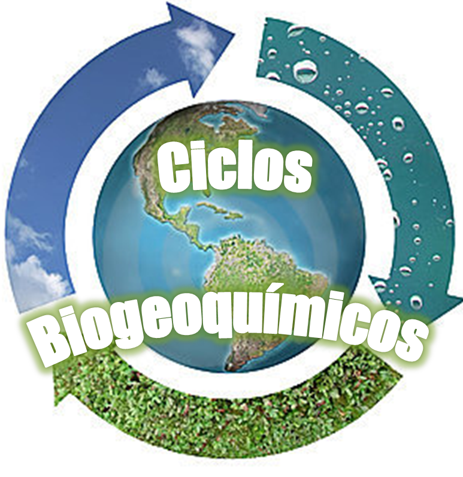
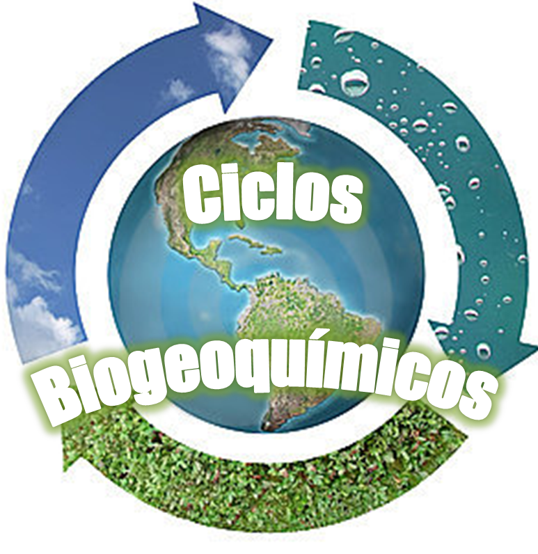
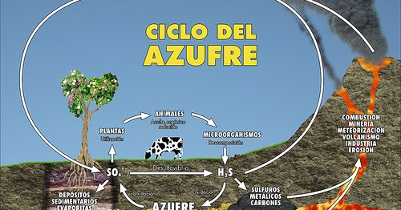

Ciclos biogeoquimicos
Qué son los Ciclos biogeoquímicos:
Se denomina como ciclos biogeoquímicos la conexión y movimientos que existen entre los elementos vivos y los no vivoscon el fin de que la energía fluya a través de los ecosistemas.
La palabra biogeoquímico está compuesta por términos que derivan del griego: bioque significa "vida", y geo, que indica "tierra". Por tanto, biogeoquímico es un término que señala los movimientos cíclicos de los elementos biológicos vitales para la vida. Geológicos porque ocurren en la tierra y la atmósfera, y químicos porque se trata de elementos naturales.
Los ciclos biogeoquímicos más importantes son el ciclo hidrológico, el ciclo del nitrógeno, el ciclo del carbono, el ciclo del oxígeno, el ciclo del azufre y el ciclo del fósforo.
En la naturaleza hay recursos que son limitados, por lo que estos deben ser reciclados para evitar que se agoten y que desaparezca la vida en la Tierra.
Por esta razón, es necesario que estos ciclos sucedan para que cuando un organismo vivo muera, los elementos o sustancias químicas que se generan durante su descomposición puedan ser aprovechados y depositados en la tierra a fin de que después otros organismos puedan aprovecharlos.
En consecuencia, los ciclos biogeoquímicos son muy importantes para el desarrollo y continuación de la vida en el planeta.
No obstante, la actividad del ser humano puede intervenir, por diferentes razones, en estos ciclos, y acelerar o retrasar el uso de estos recursos.
Cabe destacar que los ciclos biogeoquímicos se realizan gracias a la energía que fluye abiertamente en el ecosistema, y que se obtiene de manera directa o indirecta del sol.
 

Tipos de Ciclos Biogeoquímicos
1.- Sedimentarios: los nutrientes circulan principalmente en la corteza terrestre (suelo, rocas, sedimentos, etc) la hidrosfera y los organismos vivos. Los elementos en estos ciclos son generalmente reciclados mucho más lentamente que en el ciclo gaseoso, además el elemento se transforma de modo químico y con aportación biológica en un mismo lugar geográfico. Los elementos son retenidos en las rocas sedimentarias durante largo periodo de tiempo con frecuencias de miles a millones de años. Ejemplos de este tipo de ciclos son el FÓSFORO y el AZUFRE.
2.- Gaseoso: los nutrientes circulan principalmente entre la atmósfera y los organismos vivos. En la mayoría de estos ciclos los elementos son reciclados rápidamente, con frecuencia de horas o días. Este tipo de ciclo se refiere a que la transformación de la sustancia involucrada cambia de ubicación geográfica y que se fija a partir de una materia prima gaseosa. Ejemplos de ciclos gaseosos son el CARBONO, el NITRÓGENO y OXÍGENO.
3.- El Ciclo HIDROLÓGICO: el agua circula entre el océano, la atmósfera, la tierra y los organismos vivos, este ciclo además distribuye el calor solar sobre la superficie del planeta
Relación de las industrias del proceso y el medio:
Una industria y su medio están involucradas en un sistema, ambos subsistema interrelacionan para formar un único sistema. En esta relación se establece un contacto íntimo que tiene tanto entradas como salidas en ambos subsistemas.
La industria del proceso se abastecerá pues del medio así como el medio recibirá las salidas de la industria, tanto productos, como desechos.
Pero la industria como acto humano, produce desechos que alteran el medio que le rodea (emisión de SO2, SO3, NO2, NO, CO, CO2, etc). Si bien se consideran desechos, la naturaleza tiene la capacidad de eliminarlos en concentraciones razonables, pero cuando se afecta el equilibrio ecológico drásticamente el desecho pasa a ser contaminante. Otras veces el proceso es a la inversa, podemos llegar a agotar o desvirtuar los nutrientes que permiten y mantienen las cadenas tróficas y la vida. Se puede entonces acabar con el flujo correcto de biomasa, y eliminar seres vivos
Ciclo de nitrógeno:
Los organismos vivos no pueden utilizar el nitrógeno puro en la atmósfera para esto se convierte en nitrato orgánico que se consigue a través de la fijación biológica esto es combinar nitrógeno y oxígeno para ser enviado por las precipitaciones a la superficie terrestre.
La atmósfera es el principal reservorio de nitrógeno, donde constituye hasta un 78 % de los gases. Sin embargo, como la mayoría de los seres vivos no pueden utilizar el nitrógeno atmosférico para elaborar aminoácidos y otros compuestos nitrogenados, dependen del nitrógeno presente en los minerales del suelo. Por lo tanto, a pesar de la gran cantidad de nitrógeno en la atmósfera, la escasez de nitrógeno en el suelo constituye un factor limitante para el crecimiento de los vegetales.

Ciclo del agua:
El ciclo hidrológico se define como la secuencia de fenómenos por medio de los cuales el agua pasa de la superficie terrestre, en la fase de vapor, a la atmósfera y regresa en sus fases líquida y sólida. La transferencia de agua desde la superficie de la Tierra hacia la atmósfera, en forma de vapor de agua, se debe a la evaporación directa, a la transpiración por las plantas y animales y por sublimación (paso directo del agua sólida a vapor de agua). (Explicación tomada de: http://www.jmarcano.com/nociones/ciclo1.html)
El ciclo hidrológico se define como el "proceso integrante de los flujos de agua, energía y algunas sustancias químicas". En la figura se resumen cualitativamente los principales elementos componentes del ciclo hidrológico.
Así, el agua cae sobre la superficie terrestre en forma de precipitación líquida o sólida (nieve, granizo, etc.). Parte de aquella puede ser evaporada antes de tocar la superficie terrestre. Aquella fracción que alcanza la vegetación es parcialmente retenida por las hojas y cobertura foliar de las plantas (intercepción). De allí, una parte es evaporada nuevamente hacia la atmósfera o escurre y cae hacia el suelo, desde donde puede infiltrarse o escurrir por las laderas siguiendo la dirección por las mayores pendientes del terreno.

Ciclo del carbono:
El dióxido de carbono en la atmósfera es acumulado en vegetales en forma de grasas y después los herbívoros se alimentan de la planta para obtener energía después continua la cadena alimenticia hasta llegar a los seres humanos, a si se devuelve a la atmósfera por medio de la respiración.
El carbono es parte fundamental y soporte de los organismos vivos, porque proteínas, ácidos nucleicos, carbohidratos, lípidos y otras moléculas esenciales para la vida contienen carbono. El ciclo del carbono es un ciclo biogeoquímico donde el carbono sufre distintas transformaciones a lo largo del tiempo (ver Figura 4). Este ciclo juega un papel importante en la regulación del clima del planeta. Este elemento se encuentra depositado en todas las esferas del sistema global en diferentes formas: en la atmósfera como dióxido de carbono, metano y otros componentes; en la hidrosfera, en forma de dióxido de carbono disuelto en al agua; en la litósfera, en las rocas y en depósitos de carbón, petróleo y gas; en la biosfera, en los carbohidratos; en la antropósfera, en diferentes formas en los objetos creado por la sociedad. El carbono circula entre la atmósfera, la hidrosfera, la biosfera y la litosfera por medio de la interacción en escalas de tiempo que van desde procesos que demoran algunas horas, días, meses y estaciones hasta aquellos que tardan largos periodos geológicos.

Ciclo del azufre:
El azufre se incorpora a los vegetales para que los consumidores primarios los adquieran. El azufre llega a la atmósfera como sulfuro de hidrógeno o dióxido de azufre proveniente de los volcanes, el azufre se combina con el agua en la atmósfera formando ácido sulfúrico y es ahí como se produce la lluvia ácida.
El ciclo del azufre es la serie de procesos por los que el azufre se mueve hacia y desde los minerales, incluyendo las vías navegables y los sistemas vivos.

Informacion obtenida por las paginas: